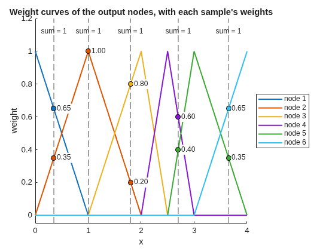
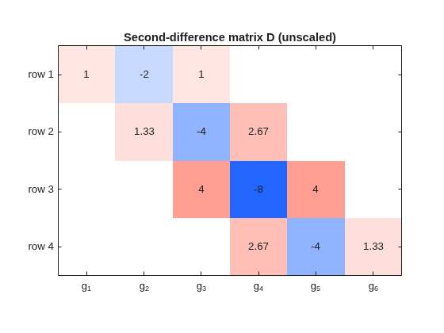
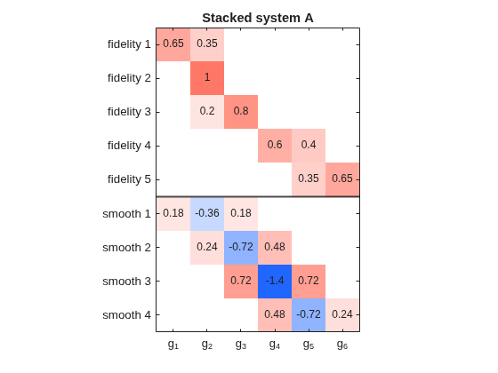
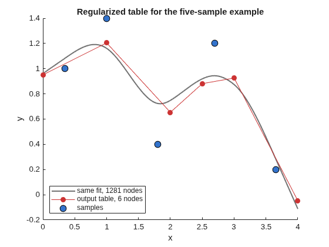
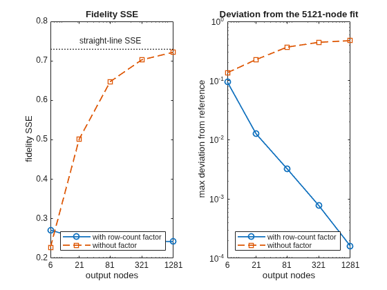

Prerequisites: none beyond matrix-vector products and least squares. Part 1: Introduction and Intuition is optional background on what regularizeNd is for.
Learning goals
Turn scattered samples into fidelity equations on a nonuniform output grid, using linear interpolation.
Build scaled second-difference smoothness rows and stack them under the fidelity rows.
Solve the stacked least-squares problem through its normal equations, read the residuals, and explain why the row-count factor keeps the fit from drifting as the grid is refined.
NoteSource and attribution
This page is adapted from three articles published on Math for Mere Mortals:
This page is an independent rewrite of those articles’ ideas for regularizeNd. Its text, equations, examples, numbers, and figures were written and computed for this site. The articles call data with one input and one output “2D data”; this site calls it 1D input.
The problem: scattered samples, one output table
You have measurements \((x_i, y_i)\), \(i = 1,\dots,m\). The \(x_i\) fall wherever the experiment put them, and the \(y_i\) carry noise. What you want is a table \(z_j\) at the nodes \(g_j\) of an output grid that you choose. Between nodes, the table is read by interpolation. That lets you resample the data and smooth it in one step.
The unknowns are the table entries \(z = (z_1,\dots,z_N)^T\). No formula with a few coefficients is fitted. Every node value is free. The task is to choose them so the table agrees with the samples and behaves sensibly between them.
This page follows one small example throughout. It has five samples and a six-node grid:
Sample \(i\)
\(x_i\)
\(y_i\)
1
0.35
1.0
2
1.00
1.4
3
1.80
0.4
4
2.70
1.2
5
3.65
0.2
The output grid is \(g = [0,\ 1,\ 2,\ 2.5,\ 3,\ 4]\). It is nonuniform. The spacing is 1, then 0.5 between \(x=2\) and \(x=3\), then 1 again. The samples are irregular too, and sample 2 lands exactly on node 2. Figure 1 shows the layout.
Figure 1: The five samples (circles) and the six output-grid nodes (dashed lines). The grid is nonuniform. The spacing is 1, then 0.5 between x = 2 and x = 3, then 1.
Interpolation: each sample becomes a row of weights
Suppose sample \(i\) lies in the grid interval \([g_j, g_{j+1}]\). Its position in that interval is
The weights are nonnegative and sum to one. A constant table is therefore read as that constant everywhere. The same weights also reproduce \(x_i\) from the node coordinates, so a table whose values are linear in the node positions is read exactly.
Asking the table to agree with sample \(i\) gives one linear equation:
This is a fidelity equation. The \(\approx\) is there on purpose. The samples are noisy, so the equation is not required to hold exactly.
For sample 3, \(x_3 = 1.8\) lies in \([g_2, g_3] = [1, 2]\). Then \(t_3 = 0.8\), so the weights are \(0.2\) on node 2 and \(0.8\) on node 3:
\[
0.2\, z_2 + 0.8\, z_3 \approx 0.4 .
\]
For sample 4, \(x_4 = 2.7\) lies in \([2.5, 3]\), an interval of width \(0.5\). So \(t_4 = (2.7 - 2.5)/0.5 = 0.4\), and the weights are \(0.6\) on node 4 and \(0.4\) on node 5. The interval width is in the denominator. That is how the nonuniform spacing enters the weights.
For sample 2, \(x_2 = 1.00\) equals \(g_2\). So \(t_2 = 0\), and its row has a single weight of 1 on node 2:
\[
z_2 \approx 1.4 .
\]
The code below builds all five rows the same way. discretize finds the interval for each sample, and sparse stores only the nonzero weights, so the zero weight in the exact-node row is never stored.
Show the MATLAB code
j=discretize(x,g);% interval index: g(j) <= x < g(j+1)t= (x-g(j)) ./ (g(j+1) -g(j));% position inside that intervalAf=sparse([(1:m)'; (1:m)'], [j;j+1], [1-t;t],m,N);assert(max(abs(full(Af-fx.system.fidelity)), [],'all') <1e-14)assert(max(abs(sum(Af,2) -1)) <1e-14) % each row sums to oneassert(abs(t(3) -0.8) <1e-14&&abs(t(4) -0.4) <1e-14&&t(2) ==0)assert(nnz(Af(2,:)) ==1) % the on-node row
Each output node gets a weight from each sample. As a function of the sample’s x position, the weight from node \(j\) is a tent. It equals 1 at \(g_j\) and falls in a straight line to zero at the neighboring nodes. Figure 2 plots these tents. Each column of \(A_f\) is one tent, read at the five sample positions. Each row of \(A_f\) collects the weights that one sample gives the nodes.
Figure 2 marks the samples with dashed lines. At each dashed line, the dots are that sample’s weights, and they add up to 1.
Show the MATLAB code
closeallxq=linspace(0,4,801)';H=interp1(g,eye(N),xq,'linear');% weight curve of each node on a fine axisnodeColor=lines(N);figureholdonforj=1:Nplot(xq,H(:,j),'-','Color',nodeColor(j,:),'LineWidth',1.5,'DisplayName',sprintf('node %d',j));endfori=1:mplot([x(i) x(i)], [-0.051.2],'--','Color', [0.350.350.35],'HandleVisibility','off');text(x(i),1.12,'sum = 1','HorizontalAlignment','center','FontSize',9);end[rr,cc,vv] =find(full(Af));fork=1:numel(vv)plot(x(rr(k)),vv(k),'o','MarkerSize',6,'MarkerFaceColor',nodeColor(cc(k),:),...'MarkerEdgeColor','k','HandleVisibility','off');text(x(rr(k)) +0.06,vv(k),sprintf('%.2f',vv(k)),'FontSize',9,...'BackgroundColor','w','Margin',1);endxlabel('x');ylabel('weight');xlim([04]);ylim([-0.051.2]);title('Weight curves of the output nodes, with each sample''s weights');legend('Location','eastoutside');

Figure 2: Weight curves of the six output nodes. Each curve gives one node’s weight as a function of the sample’s x position: a tent that peaks at its node and falls to zero at the neighboring nodes. The dashed lines mark the five samples. The dots on each dashed line are that sample’s weights, labeled with their values, and they sum to 1.
The fidelity matrix
Stacking one row per sample gives the \(5 \times 6\) fidelity system \(A_f z \approx y\). Columns are the output-grid nodes in order. Figure 3 shows the matrix with its values.
Figure 3: The fidelity matrix \(A_f\). Rows are samples, columns are output-grid nodes, and blank cells are structural zeros. Each row has at most two nonzeros, in adjacent columns.
Five equations in six unknowns do not determine the table. The matrix has rank 5, so \(A_f\) has a one-dimensional null space:
Adding any multiple of \(n\) to a table leaves all five fidelity equations exactly satisfied. The null vector is supported on nodes 4 to 6, which are the nodes that samples 4 and 5 touch. Fidelity alone cannot choose a table. The smoothness rows make that choice.
The smoothness rows penalize a table whose slope changes quickly. Take three consecutive nodes. The table rises or falls across the first interval at one rate and across the second at another. The more those two rates disagree, the more the table bends and the larger the penalty. A straight line keeps one slope, so its penalty is zero. The penalty grows only when the slope jumps. For a triple of nodes \(g_a, g_b, g_c\) with values \(z_a, z_b, z_c\), the penalty is a linear combination of the three values, with weights set by the node spacing:
where the product runs over the other two nodes of the triple. The weights change wherever the spacing changes.
Three nodes give one row, so \(N = 6\) nodes give \(N - 2 = 4\) rows. The matrix \(D\) collects them:
Rows 1 and 2 are the first two triples. Row 1 covers nodes 1–3, which are evenly spaced, and has weights \([1, -2, 1]\). Row 2 covers nodes 2–4, at positions \(1\), \(2\), and \(2.5\), and has weights \([\tfrac{4}{3}, -4, \tfrac{8}{3}]\). The weights change because the spacing changes.
Row 3 covers nodes 3–5, at positions \(2\), \(2.5\), and \(3\), and has weights \([4, -8, 4]\).
Row 4 covers nodes 4–6, at positions \(2.5\), \(3\), and \(4\), and has weights \([\tfrac{8}{3}, -4, \tfrac{4}{3}]\).
A straight line has zero second derivative, so every row gives zero when applied to linear data. The example file, fixtures/regularizeNdFoundationsFixtures.m, builds this page’s numbers from the equations and checks them. The code below builds \(D\) from that formula and checks it against the example file.
Show the MATLAB code
a=g(1:N-2);b=g(2:N-1);c=g(3:N);% left, centre, right node of each triplew1=2./ ((a-b) .* (a-c));% Lagrange second-derivative weightsw2=2./ ((b-a) .* (b-c));w3=2./ ((c-a) .* (c-b));rr= (1:N-2)';D=sparse([rr;rr;rr], [rr;rr+1;rr+2], [w1;w2;w3],N-2,N);assert(max(abs(full(D-fx.system.d2)), [],'all') <1e-14)assert(max(abs(D*g)) <1e-12) % zero for a straight lineassert(max(abs(D*ones(N,1))) <1e-12) % zero for a constant
Figure 4 shows \(D\) with its values. Blank cells are zeros, so the band of three weights per row is visible.
Show the MATLAB code
closeallM=full(D);vmax=max(abs(M), [],'all');figureimagesc(M);axisimage;colormap(cmap);clim([-vmaxvmax]);[rr,cc,vv] =find(M);text(cc,rr,cellstr(compose('%.3g',vv)),'HorizontalAlignment','center');xticks(1:N);xticklabels(compose('g_%d',1:N));yticks(1:N-2);yticklabels(compose('row %d',1:N-2));title('Second-difference matrix D (unscaled)');

Figure 4: The unscaled second-difference matrix \(D\). Each row has three weights on consecutive nodes. Rows 2 and 4 are the ones whose coefficients change where the spacing changes.
Scaling the smoothness rows
The smoothness rows are scaled before they are stacked:
Here \(s = 0.01\) is the smoothness value, \(m\) is the number of samples, and \(N - 2\) is the number of smoothness rows. The square root of the ratio of equation counts keeps the two kinds of equation in balance as the grid is refined; Section 8 returns to this. The factor \((g_N - g_1)^2\) converts second differences, which carry units of \(z\) per \(x^2\), into the units of \(z\). The smoothness rows and the fidelity rows are then measured in the same units.
Put the fidelity rows above the scaled smoothness rows:
\[
A = \begin{bmatrix} A_f \\ \mu D \end{bmatrix}, \qquad
b = \begin{bmatrix} y \\ 0 \end{bmatrix}.
\]
\(A\) has \(5 + 4 = 9\) rows and 6 unknowns, so it is overdetermined and has no exact solution here. We take the \(z\) that minimizes the sum of squared residuals,
\[
\|Az - b\|^2 = \underbrace{\|A_f z - y\|^2}_{\text{fidelity SSE}} + \underbrace{\|\mu D z\|^2}_{\text{smoothness SSE}} .
\]
The minimizer trades the two terms off. Figure 5 shows the stacked matrix.
Show the MATLAB code
closeallmult=smoothness*sqrt(m/ (N-2)) * (g(end) -g(1))^2;% row-count and range factorsA= [Af;mult*D];b= [y;zeros(N-2,1)];assert(max(abs(full(A-fx.system.system)), [],'all') <1e-14)assert(size(A,1) ==m+N-2&&size(A,2) ==N)M=full(A);vmax=max(abs(M), [],'all');figureimagesc(M);axisimage;colormap(cmap);clim([-vmaxvmax]);holdonyline(m+0.5,'-','Color','k','LineWidth',1.5);[rr,cc,vv] =find(M);text(cc,rr,cellstr(compose('%.2g',vv)),'HorizontalAlignment','center','FontSize',9);xticks(1:N);xticklabels(compose('g_%d',1:N));yticks(1:m+N-2);yticklabels([compose('fidelity %d',1:m),compose('smooth %d',1:N-2)]);title('Stacked system A');

Figure 5: The stacked system \(A = [A_f;\ \mu D]\). The top block holds the fidelity rows and the bottom block holds the scaled smoothness rows. The line separates the two.
The normal equations \((A^TA)z = A^Tb\) are the least-squares optimality conditions. Each entry of \(A^TA\) is a dot product of two columns of \(A\), so only nodes within two positions of each other interact. The result is symmetric and pentadiagonal. It has five nonzero diagonals and bandwidth 2. Figure 6 shows the pattern. Its right-hand side is \(A^Tb = A_f^Ty\), because the smoothness block has zero data.
Figure 6: The normal matrix \(A^TA\) for the example. It is symmetric and pentadiagonal. Entries more than two positions from the diagonal are zero.
Solving the six-by-six system gives the table. The matrix is banded, so elimination touches only entries near the diagonal, and no inverse is needed. The stacked least-squares solve A\b gives the same answer here.
The same assembly on finer grids gives the fit as a curve. Each grid interval is split into \(f\) equal pieces, and the smoothness value stays the same. The 1281-node grid (\(f = 256\)) is plotted below. The 5121-node grid (\(f = 1024\)) is the reference for the resolution study. The 10,001-node grid (\(f = 2000\)) is used by the conditioning check.
Figure 7 plots the result. Samples are blue circles, the six-node table is red, and the 1281-node fit is gray.
Show the MATLAB code
closeallfigureholdonplot(grids{2},Zs{2},'-','Color', [0.450.450.45],'LineWidth',1.5,...'DisplayName','same fit, 1281 nodes');plot(g,Zs{1},'o-','Color', [0.80.20.2],'MarkerFaceColor', [0.80.20.2],...'DisplayName','output table, 6 nodes');plot(x,y,'o','MarkerSize',8,'MarkerFaceColor', [0.20.450.8],...'MarkerEdgeColor','k','DisplayName','samples');xlabel('x');ylabel('y');xlim([04]);title('Regularized table for the five-sample example');legend('Location','southwest');

Figure 7: Samples (blue) and the fitted table on the six-node output grid, shown in red and read by linear interpolation. The gray curve is the same fit on a 1281-node grid. The fit is a compromise. At x = 1, sample 2 has y = 1.4, but the fitted table is 1.2046.
The fit does not interpolate. It passes near the samples without passing through them, because the smoothness rows pull against the fidelity rows. Sample 2 sits on node 2, yet the table there is \(z_2 = 1.204629\) against \(y_2 = 1.4\). Only in the limit of a vanishing smoothness weight would the fit reach the samples. The table also dips below zero at node 6 (\(x = 4\)), beyond the last sample at \(x = 3.65\). Node 6 is touched only by sample 5, with weight 0.65, and the smoothness rows let the table fall below that sample’s value there.
The residuals show how the compromise is split. The fitted values at the samples are \(A_f z\), the fidelity residuals are \(A_f z - y\), and the smoothness residuals are \(\mu D z\).
Figure 8: Residuals of the solved system. The first five bars are fidelity residuals \(A_f z - y\); the last four are the scaled smoothness residuals \(\mu D z\).
The sums of squared residuals (SSE) are:
Term
Value
Fidelity SSE, \(\lVert A_f z - y\rVert^2\)
0.271358
Smoothness SSE, \(\lVert \mu D z\rVert^2\)
0.159690
Total, the minimized objective
0.431048
The fitted values at the samples are \([1.039627,\ 1.204629,\ 0.763767,\ 0.898942,\ 0.293035]\). The largest fidelity residual is at sample 3, where the fit sits \(0.363767\) above the data. The smoothness rows resist the steep drop from sample 2 (\(y = 1.4\)) to sample 3 (\(y = 0.4\)), so the table flattens instead of following it. Every residual enters the objective. The smoothness value sets how they trade off.
Grid resolution and the row-count factor
The original articles make a claim about resolution. Adding output points should not change the fit, because the scale factor compensates for the extra smoothness rows. Refining the grid adds rows. Each second-difference row measures local curvature, and that curvature does not shrink as the grid is refined. Without a correction, the penalty sum for a fixed curve grows with the number of rows, so the fit is pushed toward a straight line. The factor \(\sqrt{m/(N-2)}\) divides each row’s weight by the square root of the row count, up to the fixed constant \(\sqrt{m}\). That keeps the total penalty comparable across resolutions.
The example file computes the same study with and without the factor, refining each interval by \(1, 4, 16, 64, 256\). The reference is the 5121-node fit with the factor. Figure 9 and the table below show the results.
Nodes
With factor: fidelity SSE
smoothness SSE
max deviation
Without factor: fidelity SSE
smoothness SSE
max deviation
6
0.271358
0.159690
0.094850
0.227757
0.166802
0.136157
21
0.249744
0.167736
0.012627
0.501818
0.095076
0.226449
81
0.245067
0.168214
0.003248
0.647191
0.036544
0.367705
321
0.242977
0.168477
0.000782
0.702641
0.012728
0.443349
1281
0.242395
0.168553
0.000161
0.721934
0.003735
0.473571
The “max deviation” column is the largest difference between a fit and the 5121-node reference, measured at that fit’s nodes. With the factor, the fit approaches the reference. The deviation drops by a factor of about 3.9 to 7.5 at each fourfold refinement. Without the factor, the fidelity SSE climbs toward the straight-line value, \(0.729531\), while the smoothness SSE falls toward zero. The fit turns into a straight line, and its deviation from the reference grows.
Show the MATLAB code
closeallres=fx.resolution;figuretiledlayout(1,2);nexttilesemilogx(res.nodes,res.normalized(:,1),'o-','LineWidth',1.3,'DisplayName','with row-count factor');holdonsemilogx(res.nodes,res.withoutRowFactor(:,1),'s--','LineWidth',1.3,'DisplayName','without factor');semilogx(res.nodes([1end]),res.straightLineSSE* [11],'k:','HandleVisibility','off');text(res.nodes(2),res.straightLineSSE+0.02,'straight-line SSE','FontSize',9);xticks(res.nodes);xlabel('output nodes');ylabel('fidelity SSE');title('Fidelity SSE');legend('Location','southeast');nexttileloglog(res.nodes,res.normalized(:,3),'o-','LineWidth',1.3,'DisplayName','with row-count factor');holdonloglog(res.nodes,res.withoutRowFactor(:,3),'s--','LineWidth',1.3,'DisplayName','without factor');xticks(res.nodes);xlabel('output nodes');ylabel('max deviation from reference');title('Deviation from the 5121-node fit');legend('Location','southwest');

Figure 9: Left: the fidelity SSE against the number of output nodes, with and without the row-count factor. The dotted line is the least-squares straight-line SSE. Right: the largest deviation of each fit from the 5121-node reference, on log-log axes. Values come from the example file.
The data support a narrower claim than the original article makes. With the factor, the fitted curves converge, and their deviation from the reference shrinks at each refinement. They are not identical. The fidelity SSE falls by about 11 percent between 6 and 1281 nodes, from 0.271358 to 0.242395. The discrete second differences are not exactly the continuous derivative, and that accounts for the change in SSE. The remaining differences come from discretization, and they shrink as the grid is refined.
Connection to regularizeNd
regularizeNd builds the same two blocks. Its fidelity block is the interpolation matrix for the chosen method. Its smoothness block is the second-difference matrix scaled by the row-count and range factors derived above. The table maps this page’s symbols to the package’s outputs and inputs.
This page
regularizeNd
\(A_f\) (fidelity rows)
first output of regularizeNdMatrices
\(\mu D\) (scaled smoothness rows)
L{1}
output grid \(g\)
{g}, one vector per input
smoothness \(s\)
smoothness (one value for 1D input)
solved table \(z\)
output of regularizeNd
The check below runs when this page renders. It calls regularizeNdMatrices and regularizeNd on this page’s samples, grid, smoothness value, and linear interpolation. It compares the fidelity block, the scaled smoothness block, and the solved table with the values in the example file, and it prints the largest difference it measures. Before the check runs, the hidden setup cell adds the regularizeNd source folder to the MATLAB path. If that folder is not present, the check is skipped with a message.
Show the MATLAB code
if~haveRegularizeNdfprintf('regularizeNd is not on the MATLAB path, so the package checks were skipped.\n');else [Ap,Lp] =regularizeNdMatrices(x, {g},smoothness,'linear');zp=regularizeNd(x,y, {g},smoothness,'linear','\');dF=max(abs(full(Ap-fx.system.fidelity)), [],'all');% fidelity blockdL=max(abs(full(Lp{1} -fx.system.regularization)), [],'all');% scaled smoothness blockdZ=max(abs(zp-fx.system.solution));% solved tablefprintf('Largest difference from the example file: fidelity %.2g, smoothness %.2g, solution %.2g.\n',dF,dL,dZ);assert(dF<1e-12,'fidelity block differs from the example file')assert(dL<1e-12,'scaled smoothness block differs from the example file')assert(dZ<1e-12,'solved table differs from the example file')end
Largest difference from the example file: fidelity 0, smoothness 0, solution 0.
The reference in the example file solves the stacked system with \. The normal-equation solve above agrees with it at 6 nodes to within \(10^{-12}\). Forming \(A^TA\) squares the condition number. At 6 nodes, \(\kappa(A) = 3.19\) and \(\kappa(A^TA) = 10.2\). At 10,001 nodes, the condition estimate of the normal matrix (condest) is \(1.8\times10^{14}\). The normal-equation solution differs from the stacked solution by up to \(8.0\times10^{-4}\).
At 10,001 nodes, the stacked solve has the smaller residual norm. Its norm is 0.6409343, against 0.6409350 for the normal equations. For fine grids, solve the stacked least-squares system directly, or use the QR and iterative options described in the deep dive’s Solve stage and in Part 7. The deep dive covers the range factor in more depth. The smoothness-count discussion covers the row-count factor.
How this differs from the original
Terminology. The articles say “2D data” for one input and one output. regularizeNd calls this 1D input. The articles speak of an output dataset; this site calls it the output grid or table.
Smoothness scale. The articles scale the derivative rows by \(S = K\sqrt{N_f/N_d}\), with \(K\) the smoothness constant. regularizeNd also multiplies by the squared range \((g_N - g_1)^2\). The same numerical smoothness value therefore gives a different penalty weight in the two schemes.
Normalization with one axis. With one input there is one set of derivative rows, so the articles’ combined count and regularizeNd’s per-axis count coincide. The difference appears only with two inputs, which the later pages cover.
Resolution claim. The articles state that the output does not change with resolution. The calculation shows convergence with the factor. The fits are not identical: the fidelity SSE changes by about 11 percent over the study, and the deviation falls by 3.9 to 7.5 times per fourfold refinement. Without the factor, the fit drifts toward a straight line.
Solver. The articles note that the pentadiagonal normal matrix suits elimination. This page solves the normal equations once as a check. The reference in the example file solves the stacked system directly. The conditioning numbers in the regularizeNd section above show why the stacked solve is the safer choice on fine grids.
Interpolation. The articles choose linear interpolation as the simplest option among several, and use it throughout. This page does too. regularizeNd also offers other fidelity methods, covered in the deep dive’s fidelity section.
Example. This page uses its own five-sample example and six-node grid. None of the original example values appears here. Every number is computed by the example file or by the code on this page.
The next page applies this system to RegularizeData2D, the spreadsheet function that the original series built on the same equations.